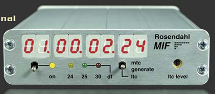

|  |
This covers all aspects of the information revolution. . Computer Systems Lab Home Faculty Staff Students Introduction About CSL Contact Information Directions Research The Computer Systems Laboratory is a joint lab of the Departments of Electrical Engineering and Computer Science at Stanford University, located in the Gates Computer Science Bulding. Established in 1968, it has grown to include 30 faculty members and 150 Ph. The CSL is internationally recognized for its excellence; the faculty, research staff and students are widely known for their leadership in developing new ideas and trends in the design, organization, and use of computers. |